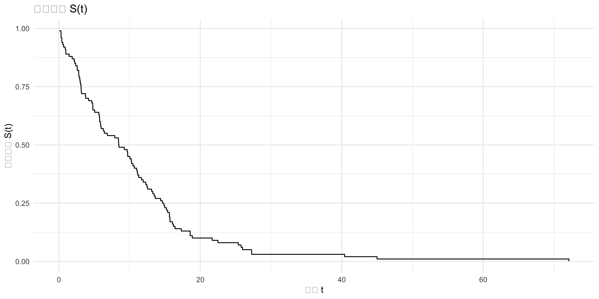
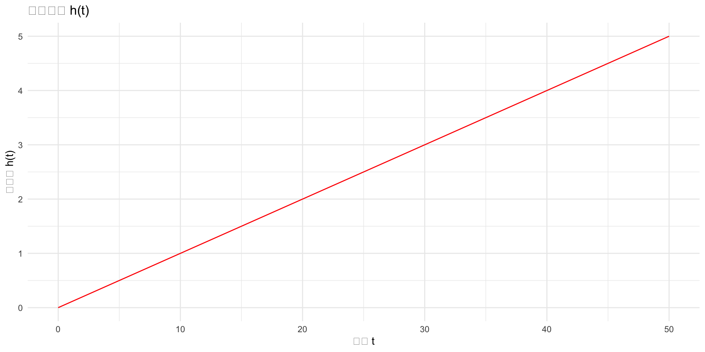

生存分析中的生存函数与风险函数
- 生存分析关注“事件发生的时间”，如患者死亡时间、机器故障时间等。
- 主要关注两个核心问题：
- 某人在某时刻仍未发生事件的概率（生存函数）
- 某人在某时刻发生事件的速率（风险函数）
生存函数 \(S(t)\) 的图像示例

风险函数表达式的通俗解释
- 第一个公式：
\[
h(t) = \lim_{\Delta t \to 0} \frac{P(t \leq T < t + \Delta t \mid T \geq t)}{\Delta t}
\]
- 表示在已经活到\(t\)时刻的前提下，马上发生事件的速率（微小时间间隔内的可能性）。
- 第二个公式：
\[
h(t) = \frac{f(t)}{S(t)}
\]
- \(f(t)\)：“恰好在\(t\)时刻发生事件的概率密度”。
- \(S(t)\)：“到\(t\)还没有发生事件的概率”。
- 比值表示活到\(t\)的人群中，发生事件的瞬时速率。
风险函数 \(h(t)\) 的图像示例

小区间概率与密度的关系（Step 2解释）
- 概率密度函数 \(f(t)\) 表示单位时间内事件发生的概率“浓度”。
- 若时间区间很短（\(\Delta t\) 很小），则在\(t\)到\(t+\Delta t\)间发生事件的概率近似为： \[
P(t \leq T < t + \Delta t) \approx f(t)\Delta t
\]
- 这就是密度与概率的微元关系。
两个风险函数公式的数学推导
- 首先写出条件概率： \[
P(t \leq T < t + \Delta t \mid T \geq t) = \frac{P(t \leq T < t + \Delta t)}{P(T \geq t)}
\]
- 分子：在区间 \(t\) 到 \(t+\Delta t\) 发生事件的概率
- 分母：到\(t\)还没发生事件的概率（即生存函数\(S(t)\)）
- 分子用概率密度近似： \[
P(t \leq T < t + \Delta t) \approx f(t) \Delta t
\]
- 当 \(\Delta t\) 很小时，概率约等于密度乘时间间隔
- 代入第一个风险函数公式： \[
h(t) = \lim_{\Delta t \to 0} \frac{P(t \leq T < t + \Delta t \mid T \geq t)}{\Delta t}
= \lim_{\Delta t \to 0} \frac{\frac{f(t)\Delta t}{S(t)}}{\Delta t}
= \frac{f(t)}{S(t)}
\]
生存函数与风险函数的关系
- 风险函数反映某一时刻的“危险程度”，生存函数反映到某一时刻“还活着”的概率。
- 两者通过概率密度函数 \(f(t)\) 相互联系：
\[
S(t) = \exp\left(-\int_0^t h(u) du\right)
\]
实际意义与应用
- 生存函数用于估计“某时刻未发生事件的概率”，如患者5年生存率。
- 风险函数用于刻画“即时发生事件的风险”，如某药物治疗后不同时期的死亡风险。
图像示意总结
- 生存函数：自左到右递减，反映随时间生存概率下降。
- 风险函数：可随时间上升、下降或保持不变，反映事件发生速率随时间变化。
生存函数与风险函数的关系式
- 风险函数反映某一时刻的“危险程度”，生存函数反映到某一时刻“还活着”的概率。
- 两者通过概率密度函数 \(f(t)\) 相互联系：
\[
S(t) = \exp\left(-\int_0^t h(u) du\right)
\]
推导思路概览
- 生存函数 \(S(t)\) 和概率密度函数 \(f(t)\) 的微分关系
- 风险函数 \(h(t)\) 和密度函数的关系
- 微分方程表达生存函数
- 积分得到生存函数的公式
- 直观解释
- 反推风险函数的公式
1. 生存函数与概率密度函数的关系
- 生存函数定义：
\[
S(t) = P(T > t)
\]
- 生存函数的导数是概率密度的负值：
\[
\frac{d}{dt} S(t) = -f(t)
\]
- \(f(t)\) 是“恰好在 t 时刻发生事件的概率密度”，\(S(t)\) 是“还没发生事件的概率”。
2. 风险函数与密度函数的关系
- 风险函数定义：
\[
h(t) = \frac{f(t)}{S(t)}
\]
- 表示：活到 \(t\) 时刻的前提下，恰好此刻发生事件的瞬时风险率。
3. 生存函数的微分方程
- 由 \(f(t) = -\frac{d}{dt} S(t)\) 得：
\[
h(t) = \frac{f(t)}{S(t)} = \frac{-\frac{d}{dt} S(t)}{S(t)}
\]
- 整理得：
\[
h(t) = -\frac{d}{dt}\ln S(t)
\]
4. 积分得到生存函数公式
- 两边积分，得： \[
\frac{d}{dt}\ln S(t) = -h(t)
\] \[
\int_0^t \frac{d}{du}\ln S(u)\,du = -\int_0^t h(u)\,du
\]
- 左边是 \(\ln S(t) - \ln S(0)\)，而 \(S(0) = 1\)： \[
\ln S(t) = -\int_0^t h(u)\,du
\]
- 两边取指数： \[
S(t) = \exp\left(-\int_0^t h(u)\,du\right)
\]
5. 直观解释
- 生存概率随风险的累计而指数下降。
- 若风险函数 \(h(u)\) 恒定，则生存函数是指数型递减曲线。
- 风险变化时，生存函数根据风险的累计变化而变化。
6. 反推风险函数
- 已知生存函数，可以反推风险函数： \[
h(t) = -\frac{d}{dt}\ln S(t)
\]
总结
生存函数 \(S(t)\) 是风险函数 \(h(t)\) 的积分的负值的指数。风险越高，生存概率下降越快。
生存分析常用模型概述
- 生存数据建模时，常用以下三种模型：
- Cox比例风险模型（CoxPH）
- 指数模型（Exponential）
- Weibull模型
- 它们在风险函数、参数假定和应用场景上各有不同。
Kaplan-Meier曲线的适用范围
- Kaplan-Meier（KM）曲线适合用于可视化两个类别组之间的生存差异。
- 但对于连续变量（如年龄、基因表达、白细胞计数等）影响的评估，KM曲线并不理想。
Cox比例风险回归模型优势
- Cox比例风险（Cox PH）回归能够同时评估类别型和连续型变量对生存的影响。
- 可对多个变量进行联合建模，适用于多因素生存分析。
Cox PH回归模型的数学表达式
Cox PH回归模型把时刻 \(t\) 的风险函数的自然对数 \(\log(h(t))\) 表示为基线风险和各暴露变量的线性组合：
\[
\log(h(t)) = \log(h_0(t)) + \beta_1 x_1 + \beta_2 x_2 + \cdots + \beta_p x_p
\]
- \(h(t)\)：时刻 \(t\) 的风险率
- \(h_0(t)\)：基线风险率（所有暴露变量取0时的风险）
- \(x_1, x_2, \ldots, x_p\)：暴露变量（可为类别型或连续型）
- \(\beta_1, \beta_2, \ldots, \beta_p\)：回归系数
单一类别变量时的Cox模型形式
对公式两边取指数，且假设只有一个类别型暴露变量 \(x_1\)（例如暴露组 \(x_1=1\)，对照组 \(x_1=0\)），得到：
\[
h_1(t) = h_0(t) \times e^{\beta_1 x_1}
\]
- \(h_1(t)\)：暴露组的风险率
- \(h_0(t)\)：对照组的风险率
风险比（Hazard Ratio）的计算与意义
将上式变形，可估算暴露组与对照组在时刻 \(t\) 的风险比：
\[
HR(t) = \frac{h_1(t)}{h_0(t)} = e^{\beta_1}
\]
- \(HR(t)\)：时刻 \(t\) 的风险比（Hazard Ratio）
- 该值在不同时间点保持恒定（即“比例风险”假定）
回归系数\(\beta\)的解释
- 每个\(\beta\)为模型估计得到的回归系数。
- \(\beta\)代表该变量每增加一个单位时，\(\log\)风险比的改变。
- 对于预测变量，\(\exp(\beta)\)为“风险比”（Hazard Ratio）：
- \(\beta > 0\)：风险增加（生存变差）
- \(\beta < 0\)：风险降低（生存变好）
- 风险比的具体解释需结合变量的实际度量。
小结
- KM曲线适合可视化类别组生存差异，不适合连续变量。
- Cox PH回归可评估类别型和连续型变量，并能联合分析多个预测因素。
- Cox模型下，风险比为\(e^{\beta}\)，且随时间保持恒定。
1. Cox比例风险模型（Cox Proportional Hazards Model）
Cox比例风险模型的生存函数：
\[
S(t|X) = [S_0(t)]^{\exp(\beta^T X)}
\] - \(S_0(t)\)：基线生存函数，通常用Breslow等方法非参数估计
模型估计形式：
- 使用部分似然函数（Partial Likelihood）估计回归系数 \(\beta\)
- 基线生存函数 \(S_0(t)\) 用非参数法估计
2. 指数模型（Exponential Model）
–
2. 指数模型（Exponential Model）生存函数：
\[
S(t|X) = \exp\left[-\lambda t \exp(\beta^T X)\right]
\]
模型估计形式：
- 参数模型，最大似然估计 \(\lambda\) 和 \(\beta\)
3. Weibull模型（Weibull Model）
## 3. Weibull模型Weibull Model的生存函数：
\[
S(t|X) = \exp\left[-\lambda t^k \exp(\beta^T X)\right]
\]
模型估计形式：
- 参数模型，最大似然法同时估计 \(\lambda\)、\(k\) 和 \(\beta\)
三者的区别与联系
| CoxPH |
\(h_0(t) \exp(\beta^T X)\) |
\([S_0(t)]^{\exp(\beta^T X)}\) |
可以 |
半参数 |
部分似然+非参数 |
基线风险未知场景 |
| 指数模型 |
\(\lambda \exp(\beta^T X)\) |
\(\exp\left[-\lambda t \exp(\beta^T X)\right]\) |
否 |
参数 |
最大似然 |
事件率稳定场景 |
| Weibull模型 |
\(\lambda k t^{k-1} \exp(\beta^T X)\) |
\(\exp\left[-\lambda t^k \exp(\beta^T X)\right]\) |
可以 |
参数 |
最大似然 |
失效速率随时间变场景 |
- CoxPH模型：基线风险灵活，适合大多数实际生存分析
- 指数模型：结构简单，适合风险率恒定情况
- Weibull模型：可描述风险随时间变动，适合工程可靠性等
总结
- CoxPH：不要求基线风险的具体分布，适用范围广，生存函数与风险函数可通过协变量系数调整。
- 指数模型：风险率恒定，公式最简单，生存函数为指数型递减。
- Weibull模型：风险率可随时间单调变化，生存函数更灵活，适合描述加速/减速失效过程。
1. Cox比例风险模型的风险函数表达式
Cox比例风险模型是生存分析中最常用的回归模型之一。它的核心思想是：
各个个体的风险函数之比是恒定的，称为“比例风险”。
数学表达式
\[
h(t|X) = h_0(t) \exp(\beta^T X)
\]
- \(h(t|X)\)：协变量 \(X\) 下，个体在时间 \(t\) 的风险函数
- \(h_0(t)\)：基线风险函数（未包含协变量影响，仅关于时间）
- \(\beta\)：回归系数向量
- \(X\)：协变量向量
2. Cox模型下的生存函数表达式
生存函数定义为：
\[
S(t|X) = P(T > t | X)
\]
Cox模型下的生存函数推导如下：
步骤一：生存函数与风险函数的微分关系
生存函数与风险函数的基本关系：
\[
S(t|X) = \exp\left(-\int_0^t h(u|X) du\right)
\]
步骤二：代入Cox模型的风险函数表达式
将 \(h(t|X) = h_0(t) \exp(\beta^T X)\) 代入上式：
\[
S(t|X) = \exp\left(-\int_0^t h_0(u) \exp(\beta^T X) du\right)
\]
步骤三：分离协变量与时间
注意 \(\exp(\beta^T X)\) 对于特定个体是常数，可以提到积分符号外：
\[
S(t|X) = \exp\left(-\exp(\beta^T X) \int_0^t h_0(u) du\right)
\]
步骤四：引入基线生存函数 \(S_0(t)\)
定义基线生存函数（当 \(X=0\)）：
\[
S_0(t) = \exp\left(-\int_0^t h_0(u) du\right)
\]
步骤五：写出最终生存函数表达式
将基线生存函数带入，得到：
\[
S(t|X) = [S_0(t)]^{\exp(\beta^T X)}
\]
3. 两者的关系及解释
- 风险函数 \(h(t|X)\) 决定了生存函数 \(S(t|X)\) 的下降速度。
- 生存函数 \(S(t|X)\) 是基线生存函数 \(S_0(t)\) 的 \(\exp(\beta^T X)\) 次幂，即协变量作用呈指数比例影响。
- \(\exp(\beta^T X) > 1\) 时，生存概率下降更快（风险更高）；\(\exp(\beta^T X) < 1\) 时，下降更慢（风险更低）。
4. 总结公式关系
风险函数：\(h(t|X) = h_0(t) \exp(\beta^T X)\)
生存函数：\(S(t|X) = [S_0(t)]^{\exp(\beta^T X)}\)
二者通过积分关系连接：
\[
S(t|X) = \exp\left(-\int_0^t h(t|X)\,dt\right)
\]
代入Cox模型风险函数后，得到最终生存函数表达式。
1. 指数分布风险模型的风险函数表达式
指数分布风险模型假设事件发生的速率（风险率）是常数，不随时间变化。
数学表达式
\[
h(t|X) = \lambda \exp(\beta^T X)
\]
- \(h(t|X)\)：协变量 \(X\) 下，个体在时间 \(t\) 的风险函数
- \(\lambda\)：基线风险率（常数）
- \(\beta\)：回归系数向量
- \(X\)：协变量向量
2. 指数分布模型下的生存函数表达式
生存函数定义为：
\[
S(t|X) = P(T > t | X)
\]
指数分布模型下的生存函数推导如下：
步骤一：生存函数与风险函数的微分关系
生存函数与风险函数的基本关系：
\[
S(t|X) = \exp\left(-\int_0^t h(u|X) du\right)
\]
步骤二：代入指数模型的风险函数表达式
由于 \(h(t|X)\) 在指数模型中是常数，对所有 \(u\) 都等于 \(h(t|X) = \lambda \exp(\beta^T X)\)，所以可以直接将其带入：
\[
S(t|X) = \exp\left(-\int_0^t \lambda \exp(\beta^T X) du\right)
\]
步骤三：计算积分
由于 \(\lambda \exp(\beta^T X)\) 是常数，对 \(u\) 的积分就是乘以时间长度 \(t\)：
\[
\int_0^t \lambda \exp(\beta^T X) du = \lambda \exp(\beta^T X) \cdot t
\]
步骤四：生存函数最终表达式
将积分结果带入生存函数：
\[
S(t|X) = \exp\left(-\lambda t \exp(\beta^T X)\right)
\]
3. 两者的关系及解释
- 风险函数 \(h(t|X)\) 决定了生存函数 \(S(t|X)\) 的下降速度和形状。
- 在指数分布模型下，风险率是恒定的，生存函数呈指数型递减。
- 协变量 \(X\) 的影响通过 \(\exp(\beta^T X)\) 成比例地调整风险率，风险率越大，生存概率下降越快。
4. 总结公式关系
风险函数：\(h(t|X) = \lambda \exp(\beta^T X)\)
生存函数：\(S(t|X) = \exp\left(-\lambda t \exp(\beta^T X)\right)\)
二者通过积分关系连接：
\[
S(t|X) = \exp\left(-\int_0^t h(u|X)\,du\right)
\] 在指数风险模型下，风险率恒定，积分直接得到乘积形式。
1. Weibull分布风险模型的风险函数表达式
Weibull模型允许风险率随时间单调变化（递增或递减），广泛用于可靠性和生存分析。
数学表达式
\[
h(t|X) = \lambda k t^{k-1} \exp(\beta^T X)
\]
- \(h(t|X)\)：协变量 \(X\) 下，个体在时间 \(t\) 的风险函数
- \(\lambda\)：尺度参数（\(\lambda > 0\)）
- \(k\)：形状参数（\(k > 0\)）
- \(\beta\)：回归系数向量
- \(X\)：协变量向量
2. Weibull模型下的生存函数表达式
生存函数定义为： \[
S(t|X) = P(T > t | X)
\]
Weibull模型下的生存函数推导如下：
步骤一：生存函数与风险函数的积分关系
\[
S(t|X) = \exp\left(-\int_0^t h(u|X) du\right)
\]
步骤二：代入Weibull模型的风险函数表达式
将 \(h(u|X) = \lambda k u^{k-1} \exp(\beta^T X)\) 代入积分：
\[
S(t|X) = \exp\left(-\int_0^t \lambda k u^{k-1} \exp(\beta^T X) du\right)
\]
步骤三：协变量的部分提到积分外
\(\exp(\beta^T X)\) 与 \(\lambda\)、\(k\) 均为常数（对特定个体），可提出积分外：
\[
S(t|X) = \exp\left(-\lambda \exp(\beta^T X) \int_0^t k u^{k-1} du\right)
\]
步骤四：计算积分
\(\int_0^t k u^{k-1} du\) 是 \(u\) 的幂函数积分：
\[
\int_0^t k u^{k-1} du = k \int_0^t u^{k-1} du = k \cdot \frac{u^k}{k} \Bigg|_0^t = t^k
\]
步骤五：生存函数最终表达式
带入积分结果：
\[
S(t|X) = \exp\left(-\lambda t^k \exp(\beta^T X)\right)
\]
3. 两者的关系及解释
- 风险函数 \(h(t|X)\) 决定生存函数 \(S(t|X)\) 的下降速度和形状。
- Weibull模型允许风险率随时间变化：\(k > 1\) 时风险随时间递增，\(k < 1\) 时风险递减，\(k = 1\) 时退化为指数模型。
- 协变量 \(X\) 的影响通过 \(\exp(\beta^T X)\) 成比例地调整风险率。
4. 总结公式关系
风险函数：\(h(t|X) = \lambda k t^{k-1} \exp(\beta^T X)\)
生存函数：\(S(t|X) = \exp\left(-\lambda t^k \exp(\beta^T X)\right)\)
二者通过积分关系连接：
\[
S(t|X) = \exp\left(-\int_0^t h(u|X)\,du\right)
\] 在Weibull风险模型下，积分得到幂函数形式，生存函数为广义指数下降曲线。
1. 指数风险回归模型简介
- 指数风险回归模型（Exponential Hazard Regression Model）是生存分析中最基础的参数模型之一。
- 假设事件发生的风险率（hazard rate）为常数，不随时间变化。
- 可用于分析协变量（如年龄、性别、分组等）对风险率的影响。
2. 风险函数的回归模型表达式
数学形式
\[
h(t|X) = \lambda \exp(\beta^T X)
\]
- \(h(t|X)\)：在协变量 \(X\) 下，个体在时刻 \(t\) 的风险率
- \(\lambda\)：基线风险率（常数，\(\lambda > 0\)）
- \(\beta\)：回归系数向量（\(\beta_1, \beta_2, ..., \beta_p\)）
- \(X\)：协变量向量（\(x_1, x_2, ..., x_p\)）
线性形式和解释
取对数可得线性回归形式：
\[
\log h(t|X) = \log \lambda + \beta_1 x_1 + \beta_2 x_2 + \cdots + \beta_p x_p
\]
- \(\log h(t|X)\) 是风险率的对数。
- \(\log \lambda\) 是基线风险率的对数。
- 每个 \(\beta_j\) 表示协变量 \(x_j\) 每增加一个单位时，\(\log\)风险率的变化。
3. 参数解释
- \(\lambda\)：所有协变量为0时的基础风险率（baseline hazard）。
- \(\beta_j\)：协变量\(x_j\)的回归系数。
- \(\exp(\beta_j)\) 是\(x_j\)每增加一个单位时，风险率的相对变化（风险比）。
- 若\(\beta_j>0\)，说明该变量增加会提高风险率（事件更容易发生）。
- 若\(\beta_j<0\)，说明该变量增加会降低风险率（事件发生概率下降）。
4. 实际意义与应用
- 风险比（Hazard Ratio）：
- 两个个体 \(X=a\) 和 \(X=b\) 的风险比为 \[
\frac{h(t|a)}{h(t|b)} = \exp[\beta^T(a-b)]
\]
- 风险比恒定，不随时间而变，便于解释协变量对风险的影响。
- 应用场景：
- 当生存数据的风险率随时间近似恒定时，适合使用指数模型。
- 例如某些设备的失效、特定人群疾病发病等。
5. 小结
- 指数风险回归模型的表达式为 \(h(t|X) = \lambda \exp(\beta^T X)\)。
- 假定风险率不随时间变化，协变量通过指数函数作用于风险率。
- 该模型易于解释，但若风险率随时间变化明显，建议选用更灵活的模型如Weibull或Cox模型。
1. Weibull风险回归模型简介
- Weibull风险回归模型是生存分析与可靠性分析中常用的参数模型。
- 允许风险率（hazard rate）随时间递增、递减或保持恒定。
- 可分析协变量（如年龄、分组等）对风险的影响。
2. Weibull风险函数的回归模型表达式
数学表达式
\[
h(t|X) = \lambda k t^{k-1} \exp(\beta^T X)
\]
- \(h(t|X)\)：协变量 \(X\) 下，个体在时刻 \(t\) 的风险率
- \(\lambda\)：尺度参数（\(\lambda > 0\)）
- \(k\)：形状参数（\(k > 0\)）
- \(\beta\)：回归系数向量（\(\beta_1, \beta_2, ..., \beta_p\)）
- \(X\)：协变量向量（\(x_1, x_2, ..., x_p\)）
线性化形式及解释
对 \(h(t|X)\) 取对数，得到线性回归形式：
\[
\log h(t|X) = \log \lambda + \log k + (k-1)\log t + \beta_1 x_1 + \beta_2 x_2 + \cdots + \beta_p x_p
\]
- \((k-1)\log t\) 体现风险率随时间的动态变化。
- \(\log \lambda + \log k\) 为截距项。
- 每个 \(\beta_j\) 表示协变量 \(x_j\) 每增加一个单位时，\(\log\)风险率的变化。
3. 主要参数解释
- \(\lambda\)（尺度参数）：所有协变量为0时的基线风险水平。
- \(k\)（形状参数）：决定风险随时间的变化趋势。
- \(k > 1\)：风险随时间递增（加速失效）
- \(k = 1\)：风险恒定（退化为指数模型）
- \(k < 1\)：风险随时间递减（早期失效）
- \(\beta_j\)：协变量\(x_j\)的回归系数。
- \(\exp(\beta_j)\) 表示\(x_j\)每增加一个单位时，风险率的相对变化（风险比）。
- \(\beta_j > 0\)：变量增加提升风险率（生存概率更低）。
- \(\beta_j < 0\)：变量增加降低风险率（生存概率更高）。
4. 风险比（Hazard Ratio）解释
对于两组协变量 \(X=a\) 和 \(X=b\)，风险比为：
\[
\frac{h(t|a)}{h(t|b)} = \frac{\lambda k t^{k-1} \exp(\beta^T a)}{\lambda k t^{k-1} \exp(\beta^T b)} = \exp[\beta^T(a-b)]
\]
5. 实际意义与应用
- 应用场景：
- 失效风险随时间变化的过程，如设备可靠性分析、医学生存分析等。
- 可以建模“加速”或“减速”失效过程。
- 优势：
- 灵活建模风险率的时间依赖性。
- 协变量解释直观，风险比恒定。
6. 小结
- Weibull风险回归模型表达式为 \(h(t|X) = \lambda k t^{k-1} \exp(\beta^T X)\)。
- 既可反映风险随时间变化，又能量化协变量对风险的影响。
- 若风险率随时间有明显变化，Weibull模型为常用首选。
1. Weibull风险回归模型简介
- Weibull风险回归模型是生存分析与可靠性分析中常用的参数模型。
- 允许风险率（hazard rate）随时间递增、递减或保持恒定。
- 可分析协变量（如年龄、分组等）对风险的影响。
2. Weibull风险函数的回归模型表达式
数学表达式
\[
h(t|X) = \lambda k t^{k-1} \exp(\beta^T X)
\]
- \(h(t|X)\)：协变量 \(X\) 下，个体在时刻 \(t\) 的风险率
- \(\lambda\)：尺度参数（\(\lambda > 0\)）
- \(k\)：形状参数（\(k > 0\)）
- \(\beta\)：回归系数向量（\(\beta_1, \beta_2, ..., \beta_p\)）
- \(X\)：协变量向量（\(x_1, x_2, ..., x_p\)）
线性化形式及解释
对 \(h(t|X)\) 取对数，得到线性回归形式：
\[
\log h(t|X) = \log \lambda + \log k + (k-1)\log t + \beta_1 x_1 + \beta_2 x_2 + \cdots + \beta_p x_p
\]
- \((k-1)\log t\) 体现风险率随时间的动态变化。
- \(\log \lambda + \log k\) 为截距项。
- 每个 \(\beta_j\) 表示协变量 \(x_j\) 每增加一个单位时，\(\log\)风险率的变化。
3. 主要参数解释
- \(\lambda\)（尺度参数）：所有协变量为0时的基线风险水平。
- \(k\)（形状参数）：决定风险随时间的变化趋势。
- \(k > 1\)：风险随时间递增（加速失效）
- \(k = 1\)：风险恒定（退化为指数模型）
- \(k < 1\)：风险随时间递减（早期失效）
- \(\beta_j\)：协变量\(x_j\)的回归系数。
- \(\exp(\beta_j)\) 表示\(x_j\)每增加一个单位时，风险率的相对变化（风险比）。
- \(\beta_j > 0\)：变量增加提升风险率（生存概率更低）。
- \(\beta_j < 0\)：变量增加降低风险率（生存概率更高）。
4. 风险比（Hazard Ratio）解释
对于两组协变量 \(X=a\) 和 \(X=b\)，风险比为：
\[
\frac{h(t|a)}{h(t|b)} = \frac{\lambda k t^{k-1} \exp(\beta^T a)}{\lambda k t^{k-1} \exp(\beta^T b)} = \exp[\beta^T(a-b)]
\]
5. 实际意义与应用
- 应用场景：
- 失效风险随时间变化的过程，如设备可靠性分析、医学生存分析等。
- 可以建模“加速”或“减速”失效过程。
- 优势：
- 灵活建模风险率的时间依赖性。
- 协变量解释直观，风险比恒定。
6. 小结
- Weibull风险回归模型表达式为 \(h(t|X) = \lambda k t^{k-1} \exp(\beta^T X)\)。
- 既可反映风险随时间变化，又能量化协变量对风险的影响。
- 若风险率随时间有明显变化，Weibull模型为常用首选。
1. 三种生存分析模型的风险函数回归表达式
Cox比例风险模型（CoxPH）
\[
h(t|X) = h_0(t) \exp(\beta^T X)
\]
- \(h(t|X)\)：在协变量 \(X\) 下，个体在时刻 \(t\) 的风险率（hazard rate）
- \(h_0(t)\)：基线风险函数，表示所有协变量取0时的风险率，随时间变化
- \(\beta\)：回归系数向量，每个协变量对应一个系数
- \(X\)：协变量向量，如年龄、性别、分组等
- \(\exp(\beta^T X)\)：协变量对风险率的影响，指数形式
指数回归模型（Exponential Model）
\[
h(t|X) = \lambda \exp(\beta^T X)
\]
- \(h(t|X)\)：在协变量 \(X\) 下，个体在时刻 \(t\) 的风险率
- \(\lambda\)：基线风险率，为常数，不随时间变化
- \(\beta\)、\(X\) 意义同上
Weibull回归模型（Weibull Model）
\[
h(t|X) = \lambda k t^{k-1} \exp(\beta^T X)
\]
- \(h(t|X)\)：在协变量 \(X\) 下，个体在时刻 \(t\) 的风险率
- \(\lambda\)：尺度参数（scale parameter），影响风险率的整体水平
- \(k\)：形状参数（shape parameter），决定风险率随时间的变化趋势
- \(k>1\)：风险随时间递增
- \(k=1\)：风险恒定（退化为指数模型）
- \(k<1\)：风险随时间递减
- \(t\)：时间
- \(\beta\)、\(X\) 和上面一致
2. 数学表达式详细解释
2.1 \(\exp(\beta^T X)\) 部分
- \(X = (x_1, x_2, ..., x_p)\)：\(p\)个协变量（如年龄、性别等）
- \(\beta = (\beta_1, \beta_2, ..., \beta_p)\)：对应的回归系数
- \(\beta^T X = \beta_1 x_1 + \beta_2 x_2 + ... + \beta_p x_p\)
- \(\exp(\beta^T X)\)：协变量对风险率的综合影响
- 若\(\beta_j > 0\)，\(x_j\)越大，风险率越高
- 若\(\beta_j < 0\)，\(x_j\)越大，风险率越低
2.2 基线风险/参数的意义
- CoxPH：\(h_0(t)\)是随时间变化的基线风险
- 指数模型：\(\lambda\)是常数，不随时间变
- Weibull模型：\(\lambda k t^{k-1}\)决定风险率随时间的动态
2.3 风险率 \(h(t|X)\) 的意义
- 表示个体在时刻\(t\)，尚未发生事件时，“即刻”发生事件的速率
- \(h(t|X)\) 越大，发生事件的可能性越高
3. 联系与区别
| CoxPH |
\(h_0(t)\exp(\beta^T X)\) |
任意（未知函数） |
指数作用 |
最常用，灵活 |
| 指数模型 |
\(\lambda\exp(\beta^T X)\) |
常数 |
指数作用 |
风险恒定场景 |
| Weibull |
\(\lambda k t^{k-1}\exp(\beta^T X)\) |
幂函数 |
指数作用 |
风险随时间变 |
联系
- 三者都用\(\exp(\beta^T X)\)描述协变量对风险的影响，风险比恒定。
- 指数模型和Weibull模型都是参数模型，CoxPH是半参数模型。
- Weibull模型\(k=1\)时变为指数模型。
区别
- CoxPH不需要指定基线风险的具体形式，更灵活。
- 指数模型基线风险恒定，只适合风险率不变的情况。
- Weibull模型能描述风险率随时间单调增减的过程。
4. 初学者常见疑问解答
- Q1：\(\beta\)怎么解释？
- \(\exp(\beta_j)\)表示协变量\(x_j\)每增加1单位，风险率相对变化的倍数，即“风险比”。
- Q2：什么时候用CoxPH，什么时候用指数/Weibull？
- 不确定基线风险形式时，优先用CoxPH；确定风险恒定可用指数模型；风险增减用Weibull。
- Q3：模型公式里\(t\)的作用？
- \(t\)表示时间，只有Weibull和CoxPH的基线风险函数显式依赖于时间。
- Q4：公式里的参数怎么估计？
- \(\beta\)通过极大似然估计法求得，CoxPH只对\(\beta\)做部分似然估计，参数模型需同时估计全部参数。
5. 总结
- CoxPH模型最灵活，实用性最强
- 指数模型假定风险率不变，适用面较窄
- Weibull模型能描述随时间变化的风险，兼具灵活性与易解释性
1. AFT模型简介
- AFT模型（Accelerated Failure Time model，加速失效时间模型）是一类生存分析模型。
- 假设协变量通过“加速”或“减缓”事件发生时间来影响生存时间。
- 基本形式为： \[
\log(T) = \mu + \beta^T X + \sigma W
\]
- \(T\)：生存时间
- \(X\)：协变量
- \(\beta\)：回归系数
- \(W\)：误差项，其分布决定了具体的AFT模型类型
2. 指数模型与Weibull模型的AFT属性
指数模型（Exponential Model）
- 指数模型是AFT模型的一种特例。
- 误差项\(W\)服从极值分布（Gumbel分布），且\(k=1\)时的Weibull模型就是指数模型。
- 生存时间对数与协变量线性相关，完全符合AFT模型的要求。
Weibull模型（Weibull Model）
- Weibull模型也是AFT模型的常见代表。
- 误差项\(W\)同样服从极值分布。
- Weibull模型既可以AFT参数化，也可以比例风险（PH）参数化，是两种模型的交集。
3. 数学表达与联系
AFT模型的一般表达式
\[
\log(T) = \mu + \beta^T X + \sigma W
\]
指数模型的AFT表达式
\[
\log(T) = \mu + \beta^T X + W, \quad W \sim \text{Gumbel}(0,1)
\]
Weibull模型的AFT表达式
\[
\log(T) = \mu + \beta^T X + \frac{1}{k}W, \quad W \sim \text{Gumbel}(0,1)
\]
- \(k\) 为形状参数，\(k=1\) 即为指数模型。
4. Weibull模型既可AFT参数化，也可PH参数化，是两种模型的交集
这句话的意思是：
Weibull模型既可以用AFT模型（加速失效时间模型）的方式来表达，也可以用PH模型（比例风险模型）的方式来表达，因此它既属于AFT模型，也属于PH模型，是这两类模型的“交集”。
详细解释
- AFT参数化：协变量通过线性方式作用于生存时间的对数（\(\log(T)\)），即AFT模型表达式。
- PH参数化：协变量通过指数方式作用于风险函数（hazard function），即PH模型表达式： \[
h(t|X) = h_0(t) \exp(\beta^T X)
\]
- 很多生存模型只能属于AFT或PH模型，但Weibull模型是少数既能AFT又能PH参数化的分布，兼具两类模型的优点，所以说是“两种模型的交集”。
- 这让Weibull模型在生存分析中非常灵活和常用。
5. 指数模型AFT表达式的含义：log(T)=μ+βᵗX+W, W~Gumbel(0,1)
这句话是指数模型（Exponential Model）作为AFT模型时的数学表达式。
解释
- \(T\)：生存时间
- \(\log(T)\)：生存时间的对数
- \(\mu\)：截距项
- \(\beta^T X\)：协变量的线性组合
- \(W\)：误差项，服从Gumbel分布
含义
- 该表达式说明协变量通过\(\beta\)以线性方式影响生存时间的对数（即AFT机制）。
- \(W\)的分布（Gumbel）决定了\(T\)的分布为指数分布。
- 这是一种“加速失效时间”模型，解释协变量如何加速或减缓事件发生。
6. 为什么AFT模型的等号左边是log(T)，不是h(t)?
回答
- AFT模型直接建模的是生存时间\(T\)的对数（\(\log(T)\)），而不是风险率\(h(t)\)。
- 这是因为AFT模型关注“协变量如何影响生存时间”，而不是直接影响风险率。
- 风险函数\(h(t)\)通常在比例风险（PH）模型（如Cox模型等）中作为被解释对象。
直观理解
- AFT模型：\(\log(T)\)为因变量，关注生存时间受到协变量的影响。
- PH模型：\(h(t)\)为核心对象，关注风险率受到协变量的影响。
7. 总结与对比
- 指数模型和Weibull模型都属于AFT模型。
- Weibull模型是AFT与PH模型的交集，既属于AFT也属于PH。
- 指数模型是Weibull模型的特例（\(k=1\)）。
- 在AFT模型中，协变量直接影响“生存时间的对数”，而在Cox比例风险（PH）模型中，协变量影响风险函数。
8. 结论
- 结论：
- 指数模型和Weibull模型都属于AFT模型。
- Weibull模型既可以AFT参数化，也可以PH参数化，是这两种模型的交集。
- 实际应用中，这两种模型常用于生存时间的加速/减缓效应分析。
- 若需具体AFT表达式举例或与PH模型对比，可进一步探讨。